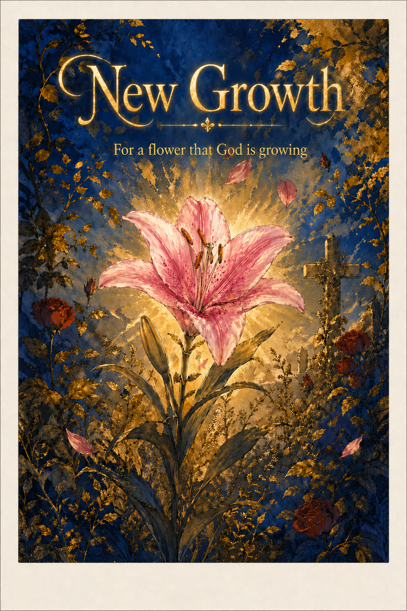
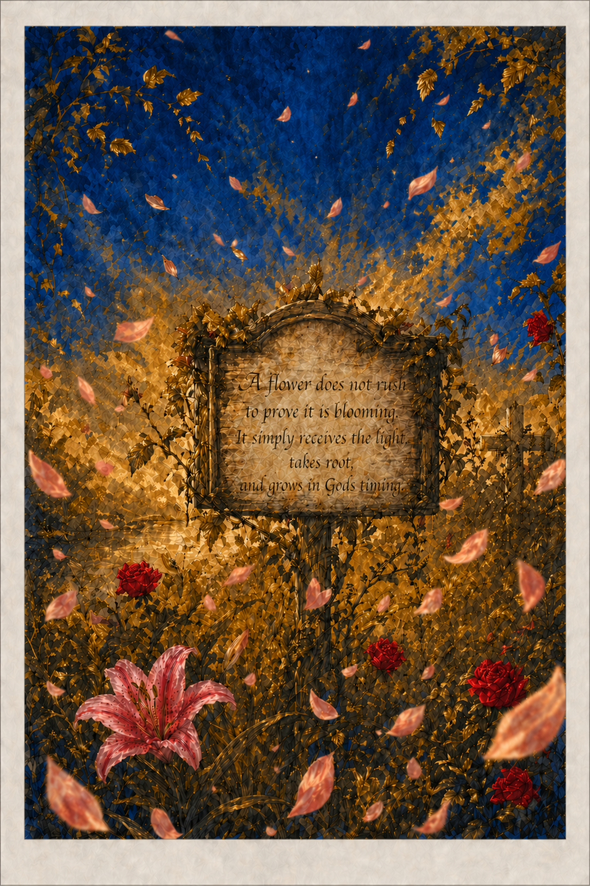
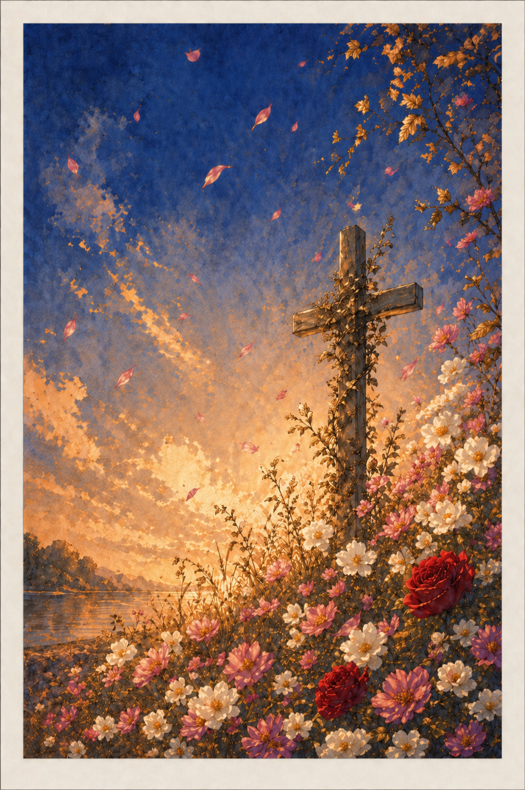
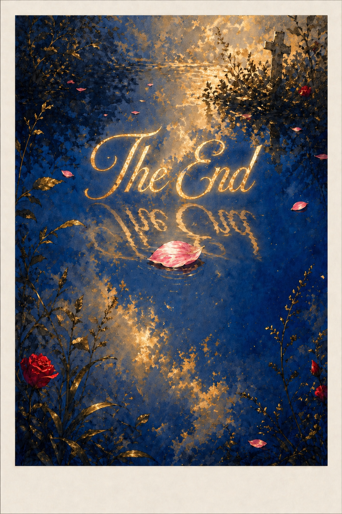

Dear Revyana Yabeny,
Hi Revyana hows it going its been a week 2ish weeks 3 weeks since our E-date and i wanted to send you a letter of encourgement.
So Be Encouraged!!!
I guess what I wanted to say is that it was really awesome getting to know you a little bit better and hearing about your backstory—growing up non-Christian, but only recently really beginning to pursue God. I wanted to say how awesome I think that is.
The world can be such a dark place. It can really be very sad when you think about what so many people go through. While I don’t have the greatest understanding of your story or what you’ve gone through in life, I think it’s awesome that you’ve taken what you’ve gone through and allowed it to push you and point you toward God.
The main encouragement I’d like to give you is an encouragement I give to all of the new brothers and sisters, because I think it’s just so important. Even this past year, I’ve had multiple situations that reinforced exactly how important it is. And that is to really get close to people and build as many close relationships as you can in the kingdom.
There are definitely times of refreshment when you feel as if life in the kingdom is awesome and perfect, but there are also times of testing, pruning, and growth, when you go through immense difficulty. During those times, having strong relationships in the kingdom can really make or break your discipleship.
There have been numerous times when I myself have gone through serious struggles, and if I didn’t have the right person there to see my struggle and push me when I wasn’t trying to continue down the path, well, I wouldn’t have gotten the chance to meet you.
Anyway, you’re an awesome sister, really fun to be around, and it is inspiring how quickly you have even been able to preach a lesson—a lesson that, I might add, was pretty powerful.
Anyway, keep growing. Someday, I think you are an awesome woman and an incredible disciple, and I cant wait to see what you become in the future. and am glad that i get the chance to become your brother in christ and friend.
